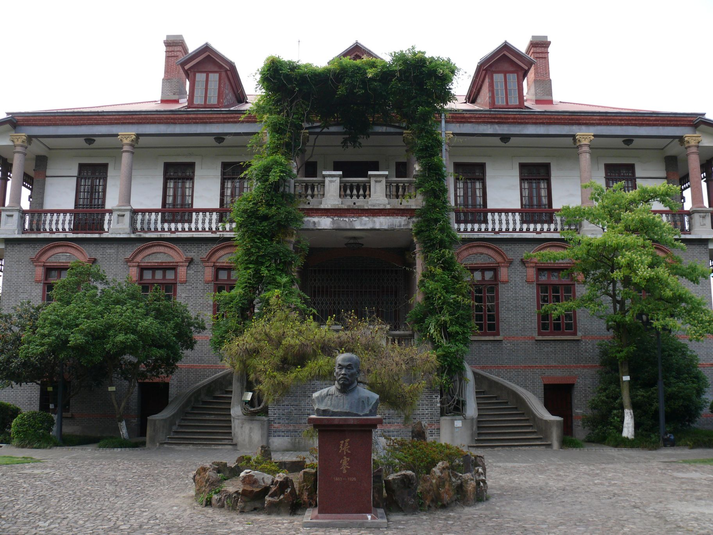
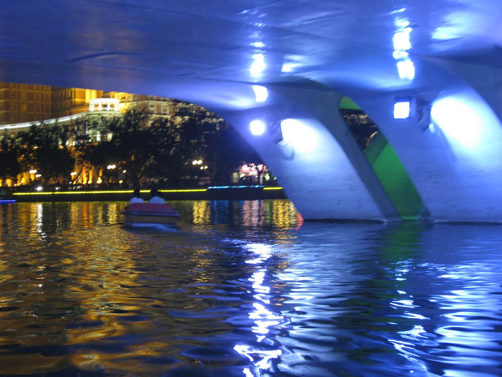
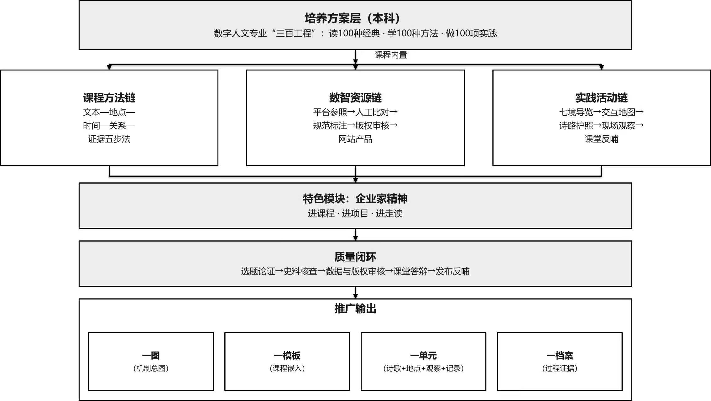

七境序章从故里到江海
向下，看看从哪开始
平台目前收录南通代表性的56个景点，每个景点几乎都有一条关于张謇诗歌的线索。沿途也有值得你亲自观察的今日风景。终点，把旅途带回书案。
封面：今日张謇纪念馆实景第一次来，从这里开始
你想怎样读南通？
想找诗、想看景、想查书，选一个入口就好。不用按顺序逛。
七境 · 七种进入南通的方式
你想从哪里出发？
点开一站，继续看它的张謇线索、参展地点与文献。可按兴趣选站，出行顺序由你决定。
漫游路线
今天，想怎样认识南通？
从一处景点开始，读它对应的地方文献。
左右滑动，查看三种漫游主题 →
图片暂时无法加载，仍可查看地点介绍。
展览目录 · 地点与文献
从狼山，读到一座城
在狼山风景名胜区读《琅山》。
足迹与风物
从海门读起
点选地图上的一境，看看历史线索如何连到今日风景。
故里原点张謇线索 · 当时
张謇生于海门常乐镇。
对应书目
从常乐的纪念空间认识张謇的故乡。
今日景点张謇纪念馆
出生地与同镇纪念空间；不将今日景点误写为诗歌创作原址。
本境推荐走读任务打开学生走读任务 →
诗与风景
诗句落地，风景有了名字
从今日风景找到对应书目，沿着文献细读南通。


拍下一个与诗句产生呼应的空间细节，不追求复原历史。
先判断是诗歌地点、同镇关联、地区延伸，还是现代周边。
写一句现场观察，让旅行记录成为可回溯的当代注释。
边走边读
数字人文五步法
读诗、辨地点、看今日、留记录。背后是数字人文的方法，体验却可以从一张照片和一句观察开始。
第一步文本从参展目录查找作品与引句。
第二步地点对照展表中的地区与地点。
第三步时间只记录题名或资料可确认的时间。
第四步关系标注直接、同镇、延伸与周边。
第五步证据为事实保留来源，存疑内容留空。
在运盐河，读《过排河观》
读地点文献 ↗“钟声随鸟远，河势趁林回。”
项目纪实
从课堂到七境
《数字人文实务》把诗文整理带入地方走读，《语义网技术》关注诗、地点与人物之间的关系。作品按地点收入地图，读者可以对照书页，留下自己的观察。
诗画作品与署名

地点、书目与页码据《参展图书目录增补完善修订版》（2026年11月16日）。诗歌校注的出处列在相应地点卡中。